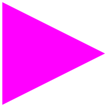
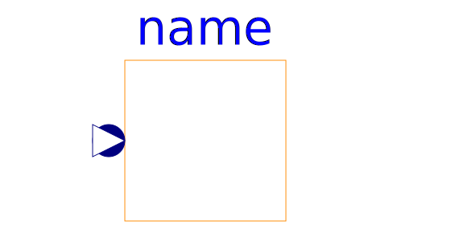
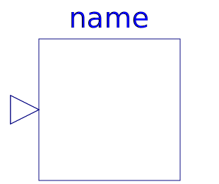
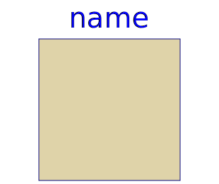
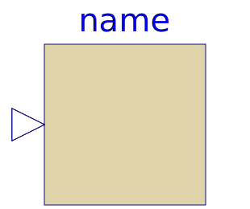
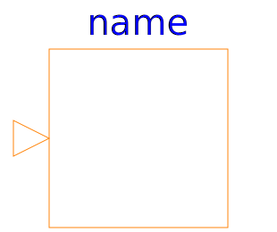
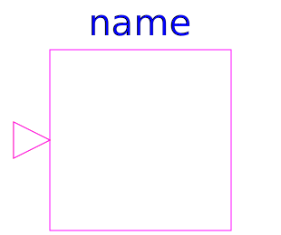
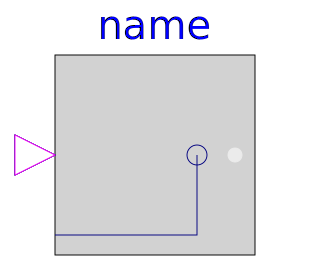
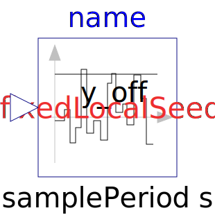

This package contains interface definitions for continuous input/output blocks with Real, Integer and Boolean signals. Furthermore, it contains partial models for continuous and discrete blocks.
| Name | Description |
|---|---|
| 'input Real' as connector | |
| 'output Real' as connector | |
|  BooleanInput | 'input Boolean' as connector |
| 'output Boolean' as connector | |
| 'input Integer' as connector | |
| 'output Integer' as connector | |
| Real input connector used for vector of connectors | |
| Integer input connector used for vector of connectors | |
| Boolean input connector used for vector of connectors | |
| Real output connector used for vector of connectors | |
| Single Output continuous control block | |
| Multiple Output continuous control block | |
| Single Input Single Output continuous control block | |
| SI2SO | 2 Single Input / 1 Single Output continuous control block |
| Single Input Multiple Output continuous control block | |
| Multiple Input Single Output continuous control block | |
|  PartialRealMISO | Partial block with a RealVectorInput and a RealOutput signal |
| Multiple Input Multiple Output continuous control block | |
| Multiple Input Multiple Output continuous control block with same number of inputs and outputs | |
| 2 Multiple Input / Multiple Output continuous control block | |
| Base class for continuous signal source | |
| Single-Variable continuous controller | |
|  MVcontrol | Multi-Variable continuous controller |
|  DiscreteBlock | Base class of discrete control blocks |
| Single Input Single Output discrete control block | |
| Multiple Input Multiple Output discrete control block | |
| Multiple Input Multiple Output discrete control block | |
|  SVdiscrete | Discrete Single-Variable controller |
| Discrete Multi-Variable controller | |
| Single Input Single Output control block with signals of type Boolean | |
| Multiple Input Multiple Output continuous control block with same number of inputs and outputs of Boolean type | |
| 2 Multiple Input / Boolean Multiple Output block with same signal lengths | |
| 2 Single Input / Boolean Single Output block | |
| Base class for Boolean signal sources | |
|  IntegerSO | Single Integer Output continuous control block |
| Multiple Integer Output continuous control block | |
| IntegerSignalSource | Base class for continuous Integer signal source |
|  IntegerSIBooleanSO | Integer Input Boolean Output continuous control block |
| Multiple Integer Input Multiple Boolean Output continuous control block with same number of inputs and outputs | |
| Partial block with a IntegerInput and an IntegerOutput signal | |
| PartialIntegerMISO | Partial block with an IntegerVectorInput and an IntegerOutput signal |
| partialBooleanSISO | Partial block with 1 input and 1 output Boolean signal |
| partialBooleanSI2SO | Partial block with 2 input and 1 output Boolean signal |
| Partial block with 3 input and 1 output Boolean signal | |
| Partial block with 1 input Boolean signal | |
| partialBooleanSO | Partial block with 1 output Boolean signal |
| Partial source block (has 1 output Boolean signal and an appropriate default icon) | |
|
|
Partial block to compare the Real input u with a threshold and provide the result as 1 Boolean output signal |
|  partialBooleanComparison | Partial block with 2 Real input and 1 Boolean output signal (the result of a comparison of the two Real inputs) |
| Partial block with a BooleanInput and a BooleanOutput signal and a small block icon | |
| Partial block with a BooleanVectorInput and a BooleanOutput signal | |
| Partial block defining the interface for conversion blocks | |
| This icon will be removed in future Modelica versions, use Modelica.Blocks.Icons.Block instead. | |
| This icon will be removed in future Modelica versions, use Modelica.Blocks.Icons.BooleanBlock instead. | |
| This icon will be removed in future Modelica versions, use Modelica.Blocks.Icons.DiscreteBlock instead. | |
| This icon will be removed in future Modelica versions, use Modelica.Blocks.Icons.IntegerBlock instead. | |
| This icon will be removed in future Modelica versions, use Modelica.Blocks.Icons.PartialBooleanBlock instead. | |
|  PartialNoise | Partial noise generator |
| Package with adaptors (especially useful for FMUs) |